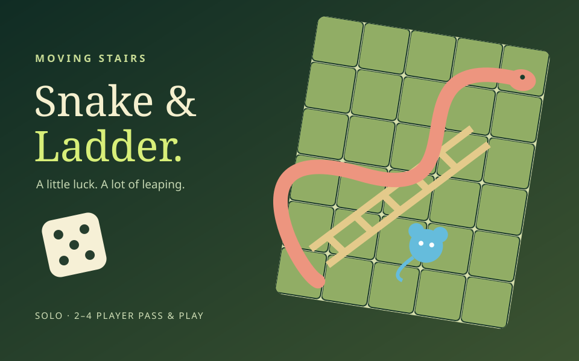

Roll & race
Choose Solo or Pass & play, select Rat, Cat or Dog and roll the dice. Select Play this move to enter the stage. Reach its flag to advance; falling keeps your starting cell. Reach cell 100 to win without an exact roll.
FROM THE BILLA CHUHA COLLECTION
A 100-cell Snake & Ladder adventure where every dice roll becomes a playable platform challenge. Cross moving stairs, climb ladders, collect coins during snake falls and defeat cell guardians. Rat double-jumps and gains a bonus cell, Cat boosts and avoids its first snake, and Dog shoots and gets one reroll. Play solo against a ten-minute clock or pass the device between 2–4 friends. Explore Garden, House, Night and Volcano themes, earn three-turn powers and optionally save completed solo scores with your existing account. Online multiplayer is planned for a future phase.

Choose Solo or Pass & play, select Rat, Cat or Dog and roll the dice. Select Play this move to enter the stage. Reach its flag to advance; falling keeps your starting cell. Reach cell 100 to win without an exact roll.
A/D or Left/Right moves. W/Up/Space jumps; Rat can jump twice and wall-slide. E activates Cat speed or Dog shots; F also fires as Dog. Touch uses a movement joystick and separate Jump / ability buttons. Dog can reroll once before a stage; Cat ignores its first snake.
Climb ladder stages for a shortcut. Steer through snake falls: each coin saves one cell. Shield, extra-jump and speed cells help for three turns. Defeat guardians by stomping or shooting to gain four cells; losing skips a turn. P pauses; Board opens the full map during challenges.
Pass & play supports 2–4 people on one device with a ready screen between turns. Solo has a ten-minute clock and saves your best locally. Completed solo wins can be submitted to the player-reported leaderboard after signing in. Online multiplayer is not part of this version.